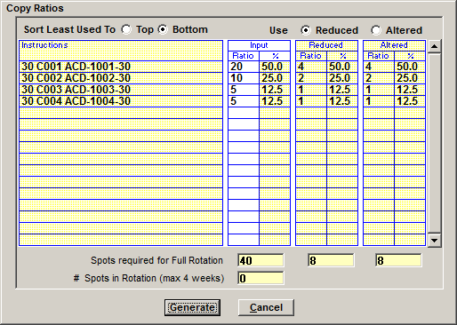

Copy Ratios
After filling out the rotation header and moving copy inventory to the rotation instructions area, an additional step that can be done before saving is to define a copy ratio. The ratio determines how frequently each piece of copy should air relative to the other pieces of copy in that set of instructions. If all the inventory is meant to air equally, there’s no need to set up a copy ratio. But if one or some of the copy inventory is supposed to air more frequently than the other inventory, a ratio must be defined and Copy Ratios screen is the easiest way to quickly set up a rotation ratio.
For example, if there are three pieces of copy inventory in the instructions area and one piece is supposed to air 50% of the time while the other pieces are supposed to air 25% of the time, the Ratios screen can be used to set this case up.
To define a Copy Ratio, press the Ratios button at the top of the Rotation Instructions area. (The Ratios button will only become active if there is more than one piece of copy in the rotation instruction area as there is no need to define a ratio when there’s only one piece of copy.)
The Copy Ratio screen lists the inventory entered in the Rotation Instructions area and has white input fields for typing in the ratio. When the ratios have been entered, the system converts the user input ratio into a reduced and simplified ratio and allows the user to choose which one to use.
An explanation of each field on the Copy Ratios screen appears below.
- Input: This is where you type in the air ratio for each piece of inventory listed.
- Reduced: Displays the input ratio automatically reduced to its lowest common denominator.
- Altered: Shows the ratio automatically calculated to the lowest number of spots. (Note: it’s possible for some or all three values to be the same depending on the numbers input. For example, if there’s two pieces of copy with one airing twice as often as the other piece of copy, the ratio will always be 2 to 1.)
The Copy Ratios screen calculates the reduced and altered ratio for the input ratio values.

- Spots required for Full Rotation: The number of spots required to fulfill the full rotation for each of the three categories.
- Spots in Rotation (max 4 weeks): Not fully implemented. This field is only populated when there is a single vehicle in the vehicle dropdown in the rotation header. It shows the amount of spots on that vehicle (up to four weeks’ worth) to determine whether the spots required to meet the full rotation is possible.
- Sort Least Used to Top or Bottom: You can sort inventory from Top to Bottom, or Bottom to Top (ascending or descending order). (Not implemented.)
After entering the ratio, select whether to use the Reduced or Altered numbers by pressing the Reduced or Altered radio button, then press “Generate” to populate the Rotation Instructions area with the selected ratio.
In the Rotation Instructions Area, if necessary, you can manipulate the way the inventory is sorted by moving or discarding the inventory in the Rotation Instructions area, although removing inventory will affect the ratio.
Press Save when finished to save the new set of Copy Rotation Instructions with the defined ratio.